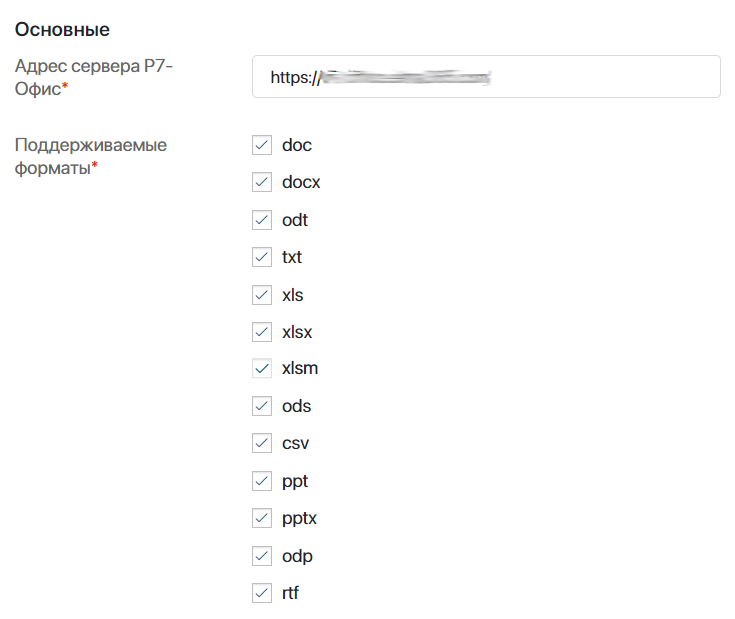
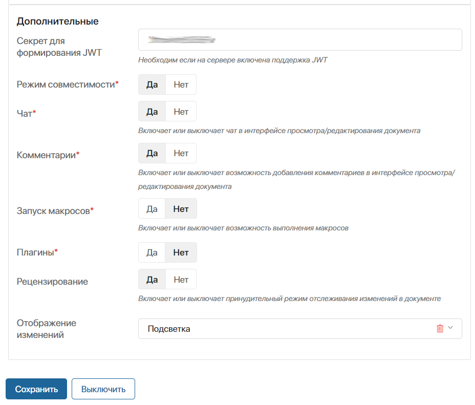
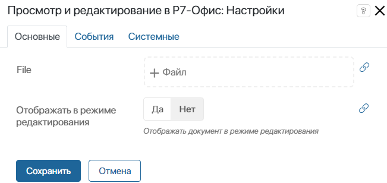
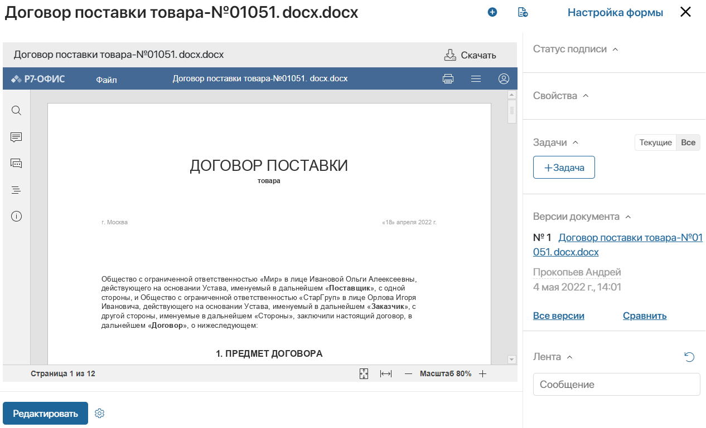
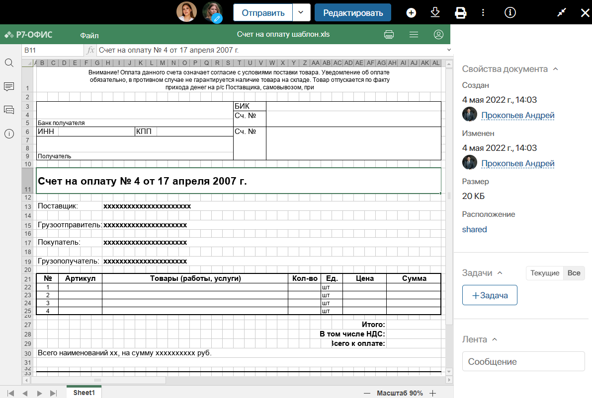

Решение для просмотра и редактирования документов онлайн в интерфейсе ELMA365 с помощью сервера Р7‑Офис.
начало внимание
Для корректной работы рекомендуем использовать сервер Р7‑Офис версии 7.4.
конец внимание
Интеграция с сервером Р7-Офис осуществляется в несколько этапов:
- Установка сервера Р7-Офис.
- Установка решения Интеграция Р7-Офис в систему ELMA365.
- Настройка модуля интеграции с Р7-Офис, входящего в состав решения.
Установка сервера Р7-Офис
Для работы требуется установленный Сервер документов Р7-Офис. Перейдите на официальный сайт, чтобы загрузить и приобрести решение. На сайте производителя вы также можете ознакомиться с инструкциями по установке Р7-Офис.
Настройка поддержки JWT
В ELMA365 поддерживается работа с JWT‑токенами, которые используются для обеспечения дополнительного уровня безопасности при аутентификации.
Начиная с версии 7.2 валидация JWT включена по умолчанию. Для более ранних версий её необходимо включить.
Включение валидации JWT-токенов на стороне Р7-Офис
"inbox": {
Если Р7-Офис установлен в Docker-контейнер, для перезапуска используйте команду: systemctl restart ds-converter ds-docservice ds-example ds-metrics В случае установки напрямую на сервер используйте команду: supervisorctl restart all После этого необходимо указать секретный ключ при настройке модуля в ELMA365. |
Если вы не используете JWT, для корректной работы модуля отключите проверку токенов в настройках Р7‑Офис.
Отключение валидации JWT-токенов на стороне Р7-Офис
Если Р7-Офис установлен в Docker-контейнер, для перезапуска используйте команду: systemctl restart ds-converter ds-docservice ds-example ds-metrics В случае установки напрямую на сервер используйте команду: supervisorctl restart all |
Установка решения «Интеграция с Р7-Офис» в ELMA365
Решение Интеграция с Р7-Офис можно импортировать из каталога ELMA365 Store или загрузить в виде файла формата .e365.
Для этого выполните следующие действия:
- В ELMA365 перейдите в раздел Администрирование > Решения и нажмите кнопку + Решение в правом верхнем углу.
- В открывшемся окне перейдите в каталог ELMA365 Store или выберите Загрузить файл и добавьте файл формата .e365.
- Дождитесь окончания проверки и установки. После этого в систему добавится модуль, обеспечивающий интеграцию с Р7-Офис.
Настройка модуля интеграции с Р7-Офис
После установки решения перейдите к настройке модуля интеграции с Р7-Офис. На странице Администрирование > Модули откройте карточку модуля и заполните основные поля:

- Адрес сервера Р7-Офис* — адрес до сервера документов Р7-Офис в формате
https://name.domain.ru/; - Поддерживаемые форматы* — отметьте форматы файлов, с которыми вы хотите работать в Р7-Офис. Можно отметить сразу все опции.
Затем перейдите к дополнительным настройкам:

- Секрет для формирования JWT — если на сервере Р7‑Офис включена поддержка JWT, укажите в этом поле секретный ключ. Его можно скопировать в конфигурационном файле
local.jsonв полеsecret; - Режим совместимости* — отметьте Да. Эта опция позволяет открывать редактирование файлов из приложений типа Документ версий системы ELMA365 от 0.9.х;
- Чат* — отключает возможности внутреннего чата Р7-Офис в режиме редактирования. Установите Нет. Эта настройка относится именно к внутренней функции Р7‑Офис;
- Комментарии* — опция включает и отключает возможности внутренних комментариев Р7‑Офис в режиме редактирования. Установите Нет. Эта настройка относится именно к внутренней функции Р7‑Офис;
- Запуск макросов* — установите Да, чтобы включить выполнение макросов в документе;
- Плагины* — установите Да, чтобы включить поддержку плагинов Р7‑Офис;
- Рецензирование — установите Да, чтобы при редактировании файла автоматически включался режим отслеживания изменений. Все изменения, внесённые в этом режиме, фиксируются как правки и выделяются цветом. Их можно принять или отклонить. Пользователи могут индивидуально включать и отключать отслеживание изменений при редактировании определённого документа на вкладке Совместная работа;
- Отображение изменений — выберите, как отображаются изменения, внесённые в документ в режиме рецензирования. Опция доступна для сервера Р7‑Офис версии 7.0 и выше:
- Подсветка — опция используется по умолчанию. Во время просмотра документа правки, добавленные в режиме отслеживания изменений, выделены цветом. При нажатии на отредактированный текст можно посмотреть автора, дату и детали исправлений. Все вносимые изменения отображаются для пользователя в реальном времени.
В режиме редактирования можно принять или отклонить правки, нажав на выделенный цветом текст;
- Не показывать — в режиме просмотра правки не видны, пока их не одобрят. Чтобы увидеть последние принятые правки, а также изменения, внесённые с отключённым рецензированием, нужно обновить страницу. Как только все пользователи заканчивают редактирование, и новая версия документа добавляется в систему, страница обновляется автоматически.
В режиме редактирования все ещё не принятые исправления выделены цветом. Их можно принять или отклонить, нажав на них;
- Показывать с изменениями — исправления, внесённые в режиме рецензирования, при просмотре документа отображаются без выделения, как если бы они уже были приняты. Если рецензирование отключено, в режиме просмотра можно увидеть изменение текста в моменте.
При редактировании документа правки, которые ещё не приняты, выделены цветом. Их можно принять или отклонить, нажав на них.
После заполнения полей сохраните настройки.
Настройка виджета «Просмотр и редактирование в Р7-Офис»
Чтобы в элементе приложения открывать файл сразу на редактирование, разместите на форме виджет Просмотр и редактирование в Р7-Офис.
Для настройки виджета заполните поля:

- File — нажмите на значок
 и выберите свойство типа Файлы из контекста приложения или бизнес‑процесса;
и выберите свойство типа Файлы из контекста приложения или бизнес‑процесса; - Отображать в режиме редактирования — выберите Да, чтобы после загрузки файл по умолчанию был открыт для внесения изменений.
Виджет Просмотр и редактирование в Р7-Офис доступен только после включения модуля интеграции с Р7-Офис. При отключении модуля на формах, где был размещён виджет, появится сообщение об ошибке.
Использование Р7-Офис
Сервис Р7-Офис по умолчанию используется для просмотра и редактирования файлов на форме приложения типа Документ и в разделе Файлы.
Для работы с файлами в приложениях других типов разместите на их формах специальные виджеты.
Р7-Офис для работы с приложением типа «Документ»
В приложении типа Документ вы можете добавлять файл при создании элемента. После этого документ отобразится на форме с помощью Р7-Офис.

Чтобы внести правки в документ, нажмите кнопку Редактировать.
По умолчанию в Р7-Офис включён режим быстрого редактирования. Все изменения сохраняются каждые несколько секунд. Если вы редактируете или просматриваете документ в то же время, когда другой пользователь его редактирует, вы увидите исправления сразу.
При необходимости вы можете выбрать другой режим совместной работы в Р7-Офис или переключать режим для определённого документа.

После того как все пользователи отредактировали документ, новая версия появится в системе в течение 5–10 секунд.
Р7-Офис для работы в разделе «Файлы»
В разделе Файлы при открытии документа предпросмотр происходит с помощью Р7-Офис.

Чтобы перейти в режим редактирования и внести правки в документ, нажмите кнопку Редактировать на верхней панели страницы просмотра файла.
Возле аватара пользователя, который редактирует файл, отображается значок карандаша.
После внесения изменений можно:
- вернуться в режим просмотра, нажав на значок
 в правом верхнем углу окна;
в правом верхнем углу окна; - закрыть файл, нажав на крестик.
В систему будет добавлена новая версия файла, которая станет текущей.
Р7-Офис для работы в приложениях типа «Стандартное» и «Событие»
Для просмотра файлов на формах приложений типа Стандартное и Событие вы можете воспользоваться виджетом Просмотр файла.
Чтобы открывать файл на редактирование, разместите на форме приложения виджет Просмотр и редактирование в Р7‑Офис.